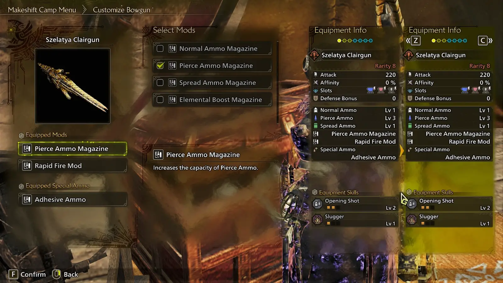
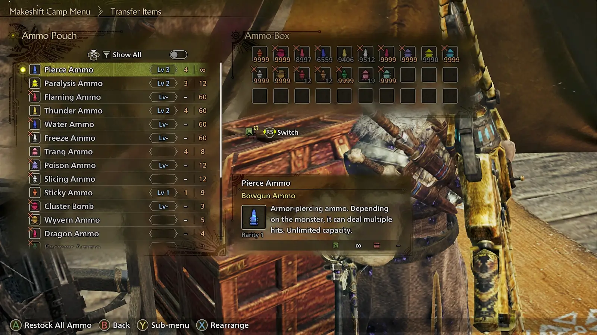
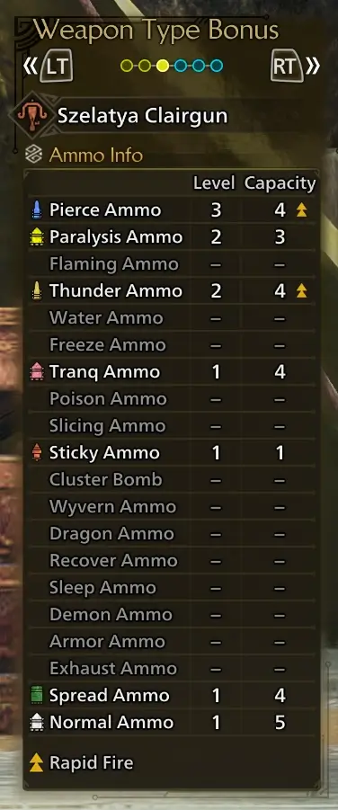
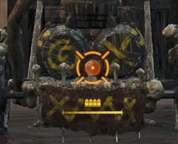
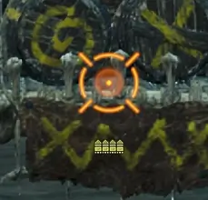
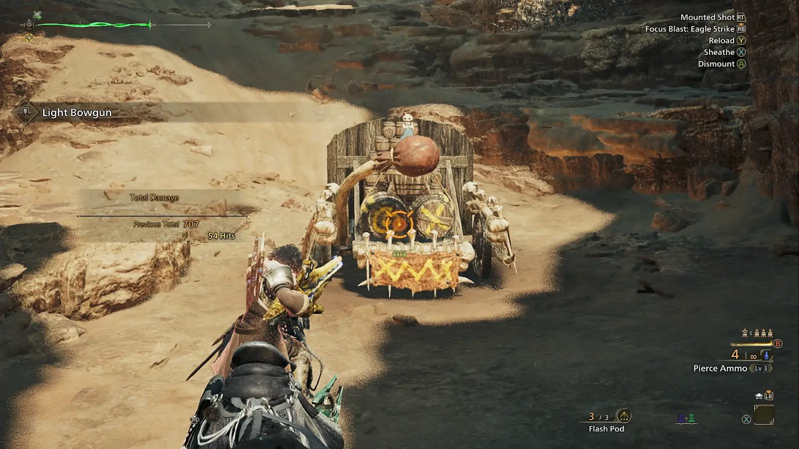
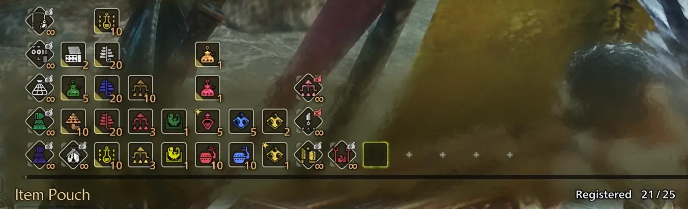
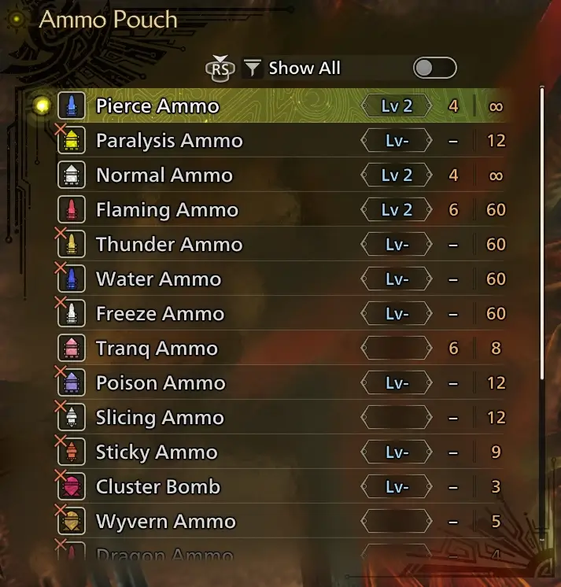
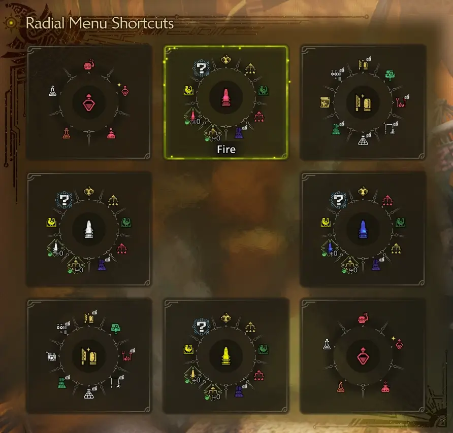

Cylon is a Monster Hunter veteran. He has many years of Bowgun experience, starting with the original Monster Hunter on PS2.
Damo is an avid Bowgunner and spreadsheet enjoyer. Without his time spent coding simulations and various damage calculations, a large part of this guide would have been impossible.
Dingus is a long-time member of the MHGH community and veteran of the series, as well as the author of the original version of this guide. Without his work, this guide would not exist as it does today.
UnkemptHerald is another long-time MHGH community member and Bowgun veteran whose datamining work, testing and input have been invaluable for the research of this guide.
Scrub is an active wilds hunter who makes build and playstyle optimizations. He has edited much of the written guide and provides speedrunning insights.
LBGLight Bowgun is a fast and versatile weapon, using its superior mobility and consistent damage to outmaneuver and lock down monsters.
While it may not boast the high damage numbers of other weapons, it is able to output chart-topping damage-per-second while still bringing plenty of utility to a hunt, whether it be multiplayer or solo. Compared to previous games, LBG has seen major changes in Wilds.
Bowguns rely on ammo, most of which has to be purchased or crafted. This will be detailed further in Section 4 of the guide. Light Bowgun heavily plays around the Rapid Fire (RF) Mode mechanic, which is also explained in Sections 4 and 5.
| Action | KBM | Xbox | PS | Switch |
|---|---|---|---|---|
| Move | WASD | Left Stick | Left Stick | Left Stick |
| Evade | Spacebar | A | X | B |
| Fire/Unsheathe | M1/LMB | RT | R2 | ZR |
| Aim/Focus Mode | M2 | LT | L2 | ZL |
| Sidestep (after firing) | Spacebar | A | X | B |
| Slide (after sidestep) | Spacebar | A | X | B |
| Reload | R | Y | Triangle | X |
| Sheathe | E | X | Square | Y |
| Sprint/Sheathe (while not aiming) | LShift | RB | R1 | R |
| Enter/Exit Rapid Fire Mode | F | B | Circle | A |
| Special Ammo | R+F OR M4 |
Y+B | Triangle+Circle | X+A |
| Focus Blast (while aiming) | Lshift, hold to charge | RB, hold to charge | R1, hold to charge | R, hold to charge |
| Cycle Ammo | Scrollwheel up/down | LB+Y/A | L1+Triangle/X | L+X/B |
| Cycle Item Pouch | Ctrl+Scrollwheel up/down | LB+X/B | L1+Square/Circle | L+Y/A |
| Use Item (while sheathed) | E | X | Square | Y |
| Fire Slinger (while aiming) | M3 | L3 | L3 | L3 |
| Chaser Shot (after firing while aiming) | F | B | Circle | A |
| RFRapid Fire Chaser (after firing in RFRapid Fire mode while aiming) | F | B | Circle | A |
| Burst Step (while aiming in RFRapid Fire mode) | Move+M1+Space | Move+RT+A | Move+R2+X | Move+ZR+B |
| Burst Step (after firing in RFRapid Fire mode while aiming) | Move+Space | Move+RT | Move+R2 | Move+ZR |
| Sidestep Reload (while aiming in RFRapid Fire Mode at 0 ammo) | Move+M1+Space | Move+RT+A | Move+R2+X | Move+ZR+B |
| Sidestep Reload (after firing in RFRapid Fire mode while aiming at 0 ammo) | Move+Space | Move+A | Move+X | Move+B | Figure 3A, Basic Input List |
 Figure 4.0A - bowgun UI elements
Figure 4.0A - bowgun UI elements
Bowguns play very differently and have several unique mechanics to separate them from other weapons, all detailed individually in the subsections below.
 Figure 4.1A - the Customize Bowgun interface
Bowguns uniquely have mods associated with them, which can be selected from the Customize Bowgun menu at camp.
Mods in Wilds are fairly simple compared to previous games, mostly affecting only ammo level or capacity (both explained further below in Section 4.2).
Which mods are available is determined by the bowgun being customized. Additionally, Special Ammo can be equipped in the Customize Bowgun menu, which is explained in Section 4.3.
| Mod Name | Mod Effect |
|---|---|
| Normal Ammo Magazine | Normal Ammo Capacity +1 |
| Pierce Ammo Magazine | Pierce Ammo Capacity +1 |
| Spread Ammo Magazine | Spread Ammo Capacity +1 |
| Elemental Boost Magazine | Elemental Ammo Capacity +1 |
| Rapid Fire Magazine | All Ammo Capacity +1 in RFRapid Fire Mode |
| Special Ammo Magazine | Special Ammo Capacity +1 |
| Normal Ammo Powder | Normal Ammo Level +1 |
| Pierce Ammo Powder | Pierce Ammo Level +1 |
| Spread Ammo Powder | Spread Ammo Level +1 |
| Elemental Ammo Powder | Elemental Ammo Level +1 |
| Rapid Fire Mod | 10% Faster RFRapid Fire Gauge Recovery |
| Special Ammo Mod | 10% Faster Special Ammo Recovery | Figure 4.1B - Bowgun Mod List |
 Figure 4.2A - the Ammo Pouch interface
Bowguns fire ammo, which have various effects based on the type and level of the ammo used. Most ammo has to be crafted, but “raw” varieties, Normal, Pierce and Spread, are infinite. Ammo is stored in the Ammo Pouch to be carried with you on hunts. Excluding raw ammo types, all ammo has a limited capacity that can be carried with you at one time. By carrying crafting materials with you, this capacity can effectively be extended; examples of this are included in Section 7.1 of the guide.
Ammo can be refilled at camp either through the Item Pouch menu or through the Ammo Pouch menu. Make sure to build a habit of restocking non-raw ammo between every hunt when using it. Note that after TU2, restocking items also automatically restocks ammo.
 Figure 4.2B - the Ammo Info for the Szelatya Clairgun (colloquially known as the Reygun)
Ammo types have a level and a magazine capacity that are both determined by the equipped gun; higher level ammo deals more damage or otherwise has increased effects. Raw ammo types have a maximum level of 3, while other ammo types have a maximum level of 1 or 2. The current magazine is shown in the bottom right of the screen (see Figure 4A) as well as beneath the crosshair while aiming.
Certain ammo can be rapid-fired while in Rapid Fire Mode (detailed in Section 4.4). This is determined by the Bowgun being used and is shown in the Ammo Info for each gun by two orange upward arrows, as shown above in Figure 4.2B.
| Ammo Type | Description | Pouch Limit |
|---|---|---|
| Normal | Deals raw damage | ∞ |
| Pierce | Deals high raw damage | ∞ |
| Spread | Deals raw damage, high recoil | ∞ |
| Flaming | Deals  Fire damage Fire damage |
60 |
| Water | Deals  Water damage Water damage |
60 |
| Thunder | Deals  Thunder damage Thunder damage |
60 |
| Ice | Deals  Ice damage Ice damage |
60 |
| Dragon | Deals  Dragon damage Dragon damage |
4 |
| Tranq | Works the same as Tranq Bombs | 8 |
| Paralysis | Inflicts  Paralysis Buildup Paralysis Buildup |
12 |
| Poison | Inflicts  Poison Buildup Poison Buildup |
12 |
| Sleep | Inflicts  Sleep Buildup Sleep Buildup |
12 |
| Exhaust | Inflicts  KO Buildup KO Buildup |
12 |
| Demon | Produces a cloud with  Demonpowder effect Demonpowder effect |
3 |
| Armor | Produces a cloud with Hardshell Powder effect | 3 |
| Recover | Produces a cloud with Lifepowder effect | 3 |
| Sticky | Explodes after delay, headshots stun |
9 |
| Slicing | Currently HBG-Exclusive | 12 |
| Cluster | Currently HBG-Exclusive | 3 |
| Wyvern | Currently HBG-Exclusive | 5 | Figure 4.2C - Bowgun Ammo List |
Figure 4.3A - selecting Special Ammo
Light Bowgun can choose between two Special Ammo options, Wyvernblast or Adhesive Ammo. Both are detailed below, but currently the choice does not matter as neither are strong enough to be used regularly in optimal gameplay.
Special Ammo has a recharge time of 100 seconds and a default capacity of 1. The cooldown can be reduced by 10 seconds with the Special Ammo Mod, and the capacity can be increased to 2 using the Special Ammo Magazine Mod.
Adhesive Ammo fires a projectile which sticks to the monster when it hits.
Left alone, it will detonate after 25 seconds, dealing six ticks of damage plus an explosion afterwards.
This damage scales with hits that land on the projectile, up to 22, at which point it will preemptively detonate.
- 1-10 hits - No additional scaling, will cause 6 ticks of damage followed by an explosion..
- 11-21 hits - Additional 6 ticks, for a total of 12 ticks followed by an explosion.
- 22 hits - Preemptive detonation and another 6 ticks, for a total of 18 followed by an explosion.
- Damage is boosted by 20% for both the ticks and explosion by Special Ammo Boost skill.
- Tick damage scales with Raw and can crit.
- Ticks deal slicing damage, and thus can cut tails.
- The final explosion does not deal slicing damage and cannot crit.
- Ticks are affected by hitzones, weakness exploit applies; however, the explosion is hitzone-independent.
- Affected by Element Boost skills, but only on Artian weapons made with that element.
- Affected by Critical Element.
- Not affected by Coalescence.
- Long loading animation, very high recoil.
- Shots that hit Adhesive Ammo give +1 RF Gauge charge (see Section 4.4).
Wyvernblast places an explosive at your feet.
When hit, it will detonate for Raw damage which is hitzone independent and scales with Raw.
It can be detonated up to three times before disappearing.
 Figure 4.4A - the orange ammo indicator and RF gauge indicate being in RFRapid Fire Mode
A new change with Wilds is Rapid Fire (RF) Mode. Different guns are able to RF different ammo types, and unlike in previous games, can only do so while in RF Mode. RF Mode uses a gauge, visible in the bottom right of the screen (shown in Figure 4A) which charges slowly over time, and can be charged faster by firing shots and chasers outside of RF mode. While charging, the meter is blue, and upon reaching full charge, it turns orange. Note that you can still enter RF mode without the gauge being fully charged.
While aiming in RF Mode, the ammo indicator in the center of the screen will turn bright yellow/orange and the RF gauge will appear underneath (shown in Figure 4.4A). Only ammo that the weapon is capable of rapid firing can be selected, and instead of one shot, each pull of the trigger will fire a volley of shots, the number of which depends upon the ammo type being fired. In addition, the moveset of the weapon changes, allowing for Burst Step, Sidestep Reload, and RF Chasers to be used, all of which are detailed in Section 5. RF Mode is a massive damage increase, so maintaining uptime on it should be one of your highest priorities on Light Bowgun.
| Type | Shots fired |
|---|---|
| Normal | 5 |
| Pierce | 3 |
| Spread | 2 |
| Elemental | 2 |
| Status | 2 |
| Sticky | 2 | Figure 4.4B, RFRapid Fire Volley Table |
| Type | Charge Gained per Shot |
|---|---|
| Normal 1 | 1.0 x 3 ticks (3.0) |
| Normal 2 | 1.0 x 3 ticks (3.0) |
| Normal 3 | 1.0 x 3 ticks (3.0) |
| Pierce 1 | 0.45 x 5 ticks (2.25) |
| Pierce 2 | 0.44 x 7 ticks (3.08) |
| Pierce 3 | 0.44 x 9 ticks (3.96) |
| Spread 1 | 1.0 x 5 (5.0) |
| Spread 2 | 0.98 x 6 (5.88) |
| Spread 3 | 1.0 x 7 (7.0) |
| Elemental | 0 |
| Sticky | 0 |
| Chaser (Any Ammo) | 4.0 | Figure 4.4C, RFRapid Fire Charge Rates, Source (Google Sheets, opens in new tab) |
 Figure 4.5A - the orange crosshair indicates being within Critical Distance
Bowguns are affected by Critical Distance, which is the range at which your ammo will deal optimal damage.
This is indicated by the crosshair turning orange (see Figure 4.5A above).
Staying within Critical Distance is an absolute necessity, as firing ammo from outside of it will do significantly reduced damage depending on the ammo fired.
The range of Critical Distance varies based on the ammo type being fired and can be increased by the Ballistics weapon skill.
| Ammo Type | Penalty Close | Penalty Far |
|---|---|---|
| Normal | N/A | -90% |
| Pierce | -60% | -90% |
| Spread | -90% | -90% |
| Elemental | -50% Raw | -50% Raw | Figure 4.5B - penalties for being outside of Critical Distance by ammo type. |
 Figure 4.6A - this target dummy is really gonna get it this time
Another new addition to Wilds is the ability to draw and fire your weapon while mounted on your Seikret. While you are aiming a weapon, your Seikret is unable to sprint and will move significantly slower. You are unable to use RFRapid Fire Mode while mounted. Note that firing while mounted incurs a -60% damage penalty.
Overall, this has limited usefulness, but could be a fun way to get off a cheeky paralyze in a multiplayer hunt, or perhaps build some RFRapid Fire gauge against a particularly mobile monster that you’re having trouble dodging.
While basic inputs were covered in Section 3, this section of the guide will provide a breakdown of what Light Bowgun can do, starting from the basics, along with providing explanations of some unique techniques and interactions.
This subsection covers the standard moveset outside of RFRapid Fire Mode.
(censored)
Figure 5.1.1A - pew pew
The most basic action on a Bowgun is firing. Firing uses up one ammo from the magazine, does damage, has recoil depending upon the ammo fired, and can be followed up with either a Chaser Shot (Section 5.1.3), a Sidestep (Section 5.1.?), or another shot. Firing can charge the RF Gauge with certain ammo types (Section 4.4).
(censored)
Figure 5.1.2A - one sec, gotta feed my g*n more b*llets
Reloading is a big part of Bowgun gameplay, and one that requires some practice with positioning and timing as it leaves you vulnerable during the animation. Can be triggered automatically by attempting to fire with an empty magazine, or manually with a reload input.
(censored)
Figure 5.1.3A - thought I was done, didn’t you?
Chaser shots are a new addition in Wilds, letting us follow up a shot with another 2-shot volley for 1 ammo. Chasers deal higher damage than standard shots but are slower as a tradeoff. Chaser shots always have a fixed RF Gauge recharge rate, regardless of the ammo type fired (see Section 4.4 for more details).
Chaser shots are used heavily with certain ammo types to generate RF charge, explained in Section 6.
Chaser shots can be followed by a Slide (Section 5.1.5).
(censored)
Figure 5.1.4A - let me just get out of your way real quick
After firing a shot, it can be followed up by a quick sidestep to either the left or right, depending on the direction inputted. This has brief iframes, and can be followed by a Slide (Section 5.1.5).
(censored)
Figure 5.1.5A - just gonna slide out of here
Certain actions can be followed up by a slide, which has brief iframes on startup but a decent amount of end lag. Can be useful for repositioning, but is typically avoided in favor of other options. Can engage rapid-fire mode during a Slide.
(censored)
Figure 5.1.6A - don’t worry, I brought my grenade launcher
New to Wilds, Light Bowgun’s Focus Strike is called Focus Blast: Eagle Strike, often referred to as just Focus Blast, Eagle Strike or Focus Strike. This move can be charged for increased damage and will immediately destroy any wounds in its explosion radius. It has three charges, displayed in the bottom right of the screen above the RF Gauge (see Figure 4.0A), which each take 35 seconds to recharge after firing.
Can be useful for a quick topple from destroying wounds or used as a wakeup for high damage.
(censored)
Figure 5.1.7A - why is it so…sticky?
This subsection covers moves only usable during RFRapid Fire Mode.
(censored)
Figure 5.2.1A - regular sh*ts, but now with extra b*llets!
While in RF Mode, the standard fire action is replaced by rapid firing. This fires an additional volley of shots, the number of which depends on the type of ammo used.
(censored)
Figure 5.2.2A - ****
Burst Step allows you to fire while making an evasive dash forward, backwards, left, or right. This has fairly generous iframes and also negates almost all recoil on raw pierce ammo. By holding down the fire input after using Burst Step, Burst Steps can be easily changed by simply inputting move + dodge while continuously holding down fire. This can be maintained even when ceasing to aim, dodging, or hopping off of ledges, so long as the fire input is continuously held.
Very useful as a repositioning tool with iframes attached, as well as a damage-per-second increase for Pierce ammo due to the reduced recoil. Can be followed by chained Burst Steps, Slide (Section 5.1.5), or a Rapid Fire Chaser Shot (Section 5.2.4).
If you’re having trouble chaining Burst Steps, try slowing down. Spamming inputs will result in sliding instead of another Burst Step.
(censored)
Figure 5.2.3A - like a normal reload, but with more iframes.
(censored)
Figure 5.2.4A - brrrrap
This section of the guide details the many playstyles of Light Bowgun, using Spread Ammo, Pierce Ammo, Normal Ammo, or Elemental Ammo.
Title Update 2 has revolutionized the way Spread plays. Formerly an immobile and committal ammo, the addition of Seregios’s LBG has drastically increased Spread’s baseline mobility, as its Evading Reload skill allows the player to reposition after every shot without having to reload. Though still committal with its use of Chasers in RF Mode, it is able to deftly maneuver with Sidesteps to scout for the right opening to commit. Additionally, the Bladescale Loading skill rewards careful dodges and aggressive play, giving Spread a very high ceiling for skill expression. All of this culminates in Spread boasting considerable flexibility when approaching a hunt.
Though it has a few matchups where it is optimal, Spread is unable to outperform Element against most of the roster (see the Meta Matchup Chart, opens in new tab). That being said, it is a much closer alternative than other Raw ammos for players who do not wish to switch loadouts for every hunt.
The gameplay loop for Spread is as follows:
While in RF mode, the optimal damage rotation is:
shot -> chaser -> slide -> shot -> chaser -> reload.
However, chasers have a very high animation commitment, so this combo should only be used during openings. Otherwise,
shot -> Sidestep
should be repeatedly used.
During RF mode, the inputs for
shot -> Sidestep
can be read by the game as
shot -> burst
step during Focus Mode. As such, this rotation requires un-aiming before doing a Sidestep.
Be careful, however: un-aiming before the second volley is fired will cause it to be fired in the direction the character is facing.
Sidestep Reload drains stamina and is slower than Standard Reload. As such, Standard Reload should be prioritized; avoid Sidestep Reloads except when necessary to dodge monster attacks.
When RF Mode falls off, follow the rotation of shot -> Sidestep to recharge the gauge. Un-aiming between shots is not necessary since Burst Steps are not possible outside of RF Mode.
Bladescale Loading grants 3 free shots with 40% increased damage upon a successful dodge. Maximizing the number of activations of this skill over the course of a hunt is imperative for players who wish to maximize Spread’s potential. Greater emphasis should be placed on dodging through monster attacks and roars.
Due to Bladescale Loading’s power, it may be prudent to conserve some RF gauge to use when Bladescale Loading is active. Gauge can even be conserved for openings rather than simply engaging RF mode when the gauge is full and emptying it fully. As long as RF gauge does not overcap, it can be creatively used to eke out more DPS (though be careful not to engage/disengage RF mode too liberally, as it takes 0.5s every time).
If using Corrupted Mantle, equip after or halfway through an RF gauge to boost affinity, raw, and gauge recharge rate. If using Evasion Mantle, equip at the beginning of the hunt in order to get the most out of it for the monster’s initial roars. It can also be saved for a difficult portion of a hunt if desired. Flash pods are overpowered.
If using a spread LBG other than Seregios’s, the playstyle changes slightly:
While in RF mode, the optimal damage rotation is
shot -> Chaser -> shot -> Chaser -> Reload.
However, chasers have a very high animation commitment, so this combo should only be used during openings. Otherwise, RF Spread shots should be repeatedly used.
When RF Mode falls off, fire standard Spread shots followed by Chasers to maximize DPS. If an opening for a Chaser is unavailable, stick to firing standard Spread shots only.
Hold a forward movement input during every shot and Chaser to counteract some of Spread’s recoil.
Pierce is a mobile option for Raw, being the only ammo type which gains DPS from chaining Burst Steps. Pierce builds can be used against any monster but will be outperformed by Spread or Element in their respective matchups (see the Meta Matchup Chart, opens in new tab).
The gameplay loop for Pierce is as follows:
While in RF Mode, chain Burst Steps (Section 5.2.2) as much as possible.
Sidestep Reload drains stamina and is slower than Standard Reload. As such, Standard Reload should be prioritized; avoid Sidestep Reloads except when necessary to dodge monster attacks.
When RF Mode falls off, fire standard Pierce shots to recharge the gauge. Chasers offer neither increased gauge regen nor increased DPS, and should be avoided accordingly.
Use Corrupted Mantle after or halfway through an RF Gauge to boost affinity, raw, and gauge charge rate.
Flash pods are overpowered.
While Normal cannot output the same damage as other ammo types, it has a very generous Critical Distance and is an option for casual play.
The gameplay loop for Normal is as follows:
While in RF Mode, fire standard shots. Use Burst step if required to dodge attacks.
Sidestep Reload drains stamina and is slower than Standard Reload. As such, Standard Reload should be prioritized; avoid Sidestep Reloads except when necessary to dodge monster attacks.
When RF Mode falls off, alternate standard Normal shots and chasers to recharge the gauge.
Use Corrupted Mantle after or halfway through an RF Gauge to boost affinity, raw, and gauge charge rate.
Flash pods are overpowered.
Light Bowgun has elemental ammo with extremely high elemental values, which makes it a perfect weapon to take advantage of elemental weaknesses. This playstyle is capable of delivering some of the highest damage-per-second possible in Wilds.
The gameplay loop for Elemental is as follows:
Unlike raw ammos, orange damage numbers do not necessarily equal higher damage; optimal raw hitzones often vary from elemental hitzones. See the matchup guide in Section 4 of Endgame Build for further information.
While in RF Mode, fire standard shots. Burst Step is a useful repositioning tool, but chaining Burst Steps like Pierce is a DPS loss.
Sidestep Reload drains stamina and is slower than Standard Reload. As such, Standard Reload should be prioritized; avoid Sidestep Reloads except when necessary to dodge monster attacks.
When RF mode falls off, alternate standard Elemental shots and chasers to recharge the gauge while maintaining DPS.
As of Title Update 2.5, poison or exhaust ammo should be used to quickly recharge Rapid Fire gauge if the gun has access to it. This can charge gauge in as few as 5 seconds, compared to 20+ seconds of alternating elemental chasers.
Due to the animation commitment of Elemental Chasers, alternating Normal Chasers can instead be considered as a significantly safer (but significantly lower DPS) alternative for recharging gauge.
Use Corrupted Mantle after or halfway through an RF Gauge to boost affinity, raw, and gauge charge rate.
Flash pods are overpowered.
Bowguns are focused more on preparation before hunts than other weapons, and taking the time to optimize your item loadout, ammo pouch and radial menus can save a lot of time in your hunts.
This section of the guide will give details and examples on how to make the most of these systems.
Remember to restock your items and ammo between hunts!
 Figure 7.1A - Endgame Item Pouch Loadout example
The Item Pouch holds the items you carry with you on hunts. As mentioned in Section 4.2, most Bowgun ammo must be crafted, and it is recommended to carry materials with you to do so, as this allows for a higher effective ammo capacity.
By pressing LShift for KB+M or L3 for Controller/PS5 in the Item Pouch menu, you can access the Item Loadouts menu where you can save and restore your item pouch loadout. It is highly recommended to make at least one general use item loadout to help with quickly restocking.
Use of pods, particularly flash pods, is highly recommended as they can be used while your weapon is drawn in Wilds. Craft more pods when you have 1 left, otherwise you’ll have to re-equip them which requires sheathing. When using Elemental or Status ammo, it is very important that you clear dragonblight immediately by using a Nulberry.
24| Item | Description |
|---|---|
| Max Potion | Used for healing |
| Ancient Potion (Optional) | Used as a meal substitute |
| Herbal Medicine/Antidote (Optional) | Used to cure poison |
| Nulberry | Used to cure blights |
| Mega Demondrug | Attack buff |
| Might Seed (Optional) | Attack buff |
| Demon Powder (Optional) | Attack buff |
| Shock Trap | Used for capturing or damage windows in multiplayer |
| Pitfall Trap (Optional) | Used as a backup when Shock Trap is ineffective |
| Dung Pod (Optional) | Used to scare off a monster |
| Flash Pod | Used to stun monsters and stop them from leaving |
| Luring Pod | Used as a backup when Flash Pod is ineffective |
| Flashbug Phosphor | Crafting material for Flash Pods |
| Snow Herb | Crafting material for Freeze Ammo |
| Flowfern | Crafting material for Water Ammo |
| Fire Herb | Crafting material for Fire Ammo |
| Thunderbug Capacitor | Crafting material for Thunder Ammo/Shock Trap |
| Trap Tool (Optional) | Crafting material for Shock Trap/Pitfall Trap |
| Catalyst (Optional) | Crafting material for Max Potion |
| Mandragora (Optional) | Crafting material for Max Potion |
| Net (Optional) | Crafting material for Pitfall Trap |
| Hot/Cold Drink (Optional) | Immunity to environmental effects/td> |
| Armorcharm | Passive defense boost |
| Powercharm | Passive attack boost | Figure 7.2B - Recommended Item List |
 Figure 7.2A - an example Ammo Pouch setup
The Ammo Pouch holds the ammo carried with you on hunts, as mentioned in Section 4.2.
It is also determines the order of ammo while cycling through it in hunts. It is recommended to set up your pouch according to personal preference. An example ammo pouch setup is shown in Figure 7.2A above which ensures quick access to Tranq and Paralysis ammo.
If you’re often running a Raw build, you may find it beneficial to move Tranq Ammo above Normal or Paralysis Ammo instead.
 Figure 7.3A - example Radial menus
Radial Menus (or shortcuts for KB+M players) allow for quick access to anything you may need to use during a hunt without having to spend time scrolling through the item pouch. Figure 7.3A above provides a simple example Radial setup for general use which can be tweaked to your personal preference.
| Item Name | Slot (Clockwise) |
|---|---|
| Max Potion | 1 |
| Flash Pod | 2 |
| Pitfall Trap | 3 |
| Luring Pod | 4 |
| Corrupted Mantle | 5 |
| Craft Flash Pod | 6 |
| Craft Elemental Ammo | 7 |
| Shock Trap | 8 |
| Optimal Status Recovery | 9 | Figure 7.3B - Elemental Radial Item List |
| Item Name | Slot (Clockwise) |
|---|---|
| Might Seed | 1 |
| Mega Demondrug | 2 |
| Demon Powder | 3 |
| Hot Drink | 4 |
| Cold Drink | 5 | Figure 7.4C - Buff Radial Item List |
This section of the guide will cover a few tips and tricks for more advanced to expert level players.
- When carrying two Bowguns with you into a hunt, both start with a full RF gauge. This means you can bring two of the same gun and swap between them for a free RF charge. Your secondary gun’s RF gauge will also continue to slowly recharge while stowed. This requires having duplicates of potentially hard to find decos, and for endgame Elemental setups requires crafting duplicate Artian weapons.
- If possible, Burst Step should be used instead of regular evasion to evade roars and other attacks to improve damage uptime. This does not apply to Spread ammo.
- You can fire a Flash Pod at your feet to immediately detonate the flash on the ground, allowing you to almost instantly dunk a monster out of the air or interrupt a threatening attack. The Blindslider skill makes this reliable even when the monster is not facing you.
- Craft ammo during Chaser Shots while building RF gauge on Elemental builds to minimize downtime. This only applies to Controller players.
- RF Mode can be quickly engaged from almost all evasive actions.
- Mantle cooldowns can be reset between hunts by resting in the tent. This is especially useful to LBG since Corrupted Mantle is so powerful in optimized play.
- Focus Strike, while normally a damage loss, can cause a unique topple when targeting specific monsters during specific attacks (typically available if a monster part glows red after it performs a big attack, e.g. Rey Dau’s face after firing its giant lightning blast).
- Piercing ammos can pass through monsters if the shot does not hit every tick. This can be useful to trigger environmental hazards without worrying about the monster blocking your shot, but can also result in a rock being dropped at the wrong time. Be mindful.
- Buffs from consumables do not tick down when in a Village or Hub. As such, a pre-buffing set with Item Prolonger and Free Meal is useful to extend Mega Demondrug duration to 45 minutes and Might Seed + Demon Powder to 4m30s. Simply switch to this set, use your consumables, then switch back to your regular hunting set (don’t forget!) before departing on a quest.
- Sneak attacks regenerate 30% of the Rapid-Fire gauge and have a 5-minute cooldown per monster. Useful in multi-monster hunts, or after an area transition (may require Ghillie Mantle).
- For multi-monster hunts, it may be beneficial to set up equipment loadouts for each combination of elements:
/, /, /, /, /, and /.
This will give you full coverage of all element combos, as well as quick options to pick for single monster hunts, but requires having duplicates of decos. However, this does prevent you from switching bowguns mid-combat for a gauge refill, since the element won’t match. - Additionally, for multi-monster Arkveld hunts, you may want to set up equipment loadouts for each: Raw/Fire, Raw/Water, Raw/Thunder, and Raw/Ice. Altogether with the above tip, this will cover one full page of equipment loadouts and give you a loadout option for every hunt in the game. (Editor’s note: Raw and Elemental builds have diverged somewhat since TU0, so this may be worse than simply changing builds at camp between monsters.)
Light Bowgun is in a great place in Wilds, likely the most fun and interactive the weapon has ever been in any title, with a much more varied moveset and gameplay loop. Instead of just aiming and shooting, we have to press, like, two more buttons sometimes!